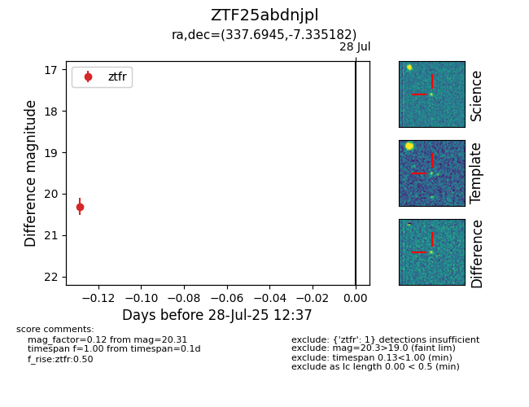

Target ZTF25abdnjpl at 2025-07-28 12:37, see:
FINK: fink-portal.org/ZTF25abdnjpl
Lasair: lasair-ztf.lsst.ac.uk/objects/ZTF25abdnjpl
ALeRCE: alerce.online/object/ZTF25abdnjpl
alt names
ZTF25abdnjpl (ztf,fink)
coordinates:
equatorial (ra, dec) = (337.6945,-7.33518)
galactic (l, b) = (57.0793,-51.24457)
photometry
last ztfr=20.31
1 ztfr detections
